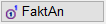
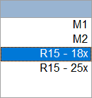

")

·Alternativer Aufruf: mittlere Maustaste auf eine Linie oder einen Text.
·Folienbelegung: Wenn AutFol (untere Menüleiste) eingestellt ist, werden die Elemente in Folie 4 abgelegt.
Funktionen |
Beschreibung |
|---|---|
Positionierung als Harfe. |
|
Fächerförmige Positionierung. |
|
Rundstahl frei positionieren. |
|
Matten frei positionieren. |
|
Positionierung verschieben. |
|
Positionierung löschen. |
|
Positionierung ändern. |
|
Konfiguration von Positionierungsstilen. |
|
Positionierung im russischen Stil (keine weiteren Erläuterungen). |
Optionen |
Beschreibung |
||
|---|---|---|---|
|
Auswahl der Anfangs- und Endsymbole (nur bei: Verlegung als Staffel, Durchmesser im Schnitt und Verlegung mit Formdarstellung). |
||
|
Mittensymbole für Harfe (nur bei: Verlegung als Staffel und Durchmesser im Schnitt). |
||
|
Stilauswahl. |
||
|
Übernahme des Stils aus einer vorhandenen Positionierung. |
||
 |
Anzeige des Bauteil- und Verlegefaktors sowie des Verknüpfungsstatus am Positionskreis aus- oder einschalten. Ein Bauteilfaktor = 1 wird nicht angeschrieben. Verknüpfte Verlegungen werden mit "_VKN" gekennzeichnet. Auf dem geplotteten Plan nicht sichtbar.
Die Stiftfarbe und -breite der Kennzeichnung entspricht der Einstellung in [Option | SysDat | Stiftfarben und -breiten → Stift 1]. |


Multifangfenster bei übereinanderliegenden Verlegungen
Im Positionierungsprogramm wird das Multifangfenster eingeblendet, wenn die angeklickte Verlegung nicht eindeutig erkannt werden kann, weil Verlegungen übereinanderliegen. Im Fenster wird jede erkannte Rundstahl- und/oder Formmattenposition mit einem Kürzel und der jeweiligen Positionsnummer gekennzeichnet. Handelt es sich bei mehreren Einträgen um dieselbe Position, wird zusätzlich die Gesamtzahl der Verlegungen angegeben.
Wenn Sie den Cursor über einen Eintrag bewegen, wird die zugehörige Verlegung in ihrer Originalfarbe dargestellt. Mit einem Linksklick auf einen Eintrag wählen Sie die entsprechende Verlegung aus.
Multifangfenster |
Kürzel |
Welche Position? |
Wie oft verlegt? |
|---|---|---|---|
 |
R Rundstahl-Positionen |
15 |
18x |
M Formmatten-Positionen |
2 |
|